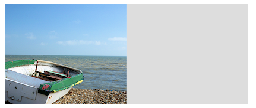

Lesson-13 Manipulating Images, Shadows and Pixels
Lesson-13 Manipulating Images, Shadows and Pixels
1. Using Images
The drawImage() Function
- using drawImage() function, you can load in an image such as jpeg,png or gif and draw it directly on the canvas.
2. Adding Shadows
- It supports addition of shadow to any element that you can draw on it with use of group of 4 properties.
- 1. shadowOffsetX: The horizontal offset in pixels that the shadow should be shifted to the right by.
- shadowOffsetY: The vertical offset in pixels that the shadow should be shifted to the down by
- shadowBlur: The number of pixels over which to blur the shadow outline
- shadowColor: the base color to use for the shadow
3. Pixel Editing
you can directly manipulate the canvas at pixel level by 3 functions:
- getImageData() function: The below image shows that image data the left half of canvas is loaded into the imagedat array and it can accessed from Javascript to read and write its pixel data. this is done using data[] array whichis property of imagedata.
-->The data[] Array
it support millions of colors for each pixel are managed by allocating 4 locations per pixel for its red, green , blue and alpha components each accepting a value of between 0 and 255.
- putImageData() function
- createImageData() function:you can create simply create a new one with blank data by calling the createImageData() function like :
imagedata= createImageData(320,240)
